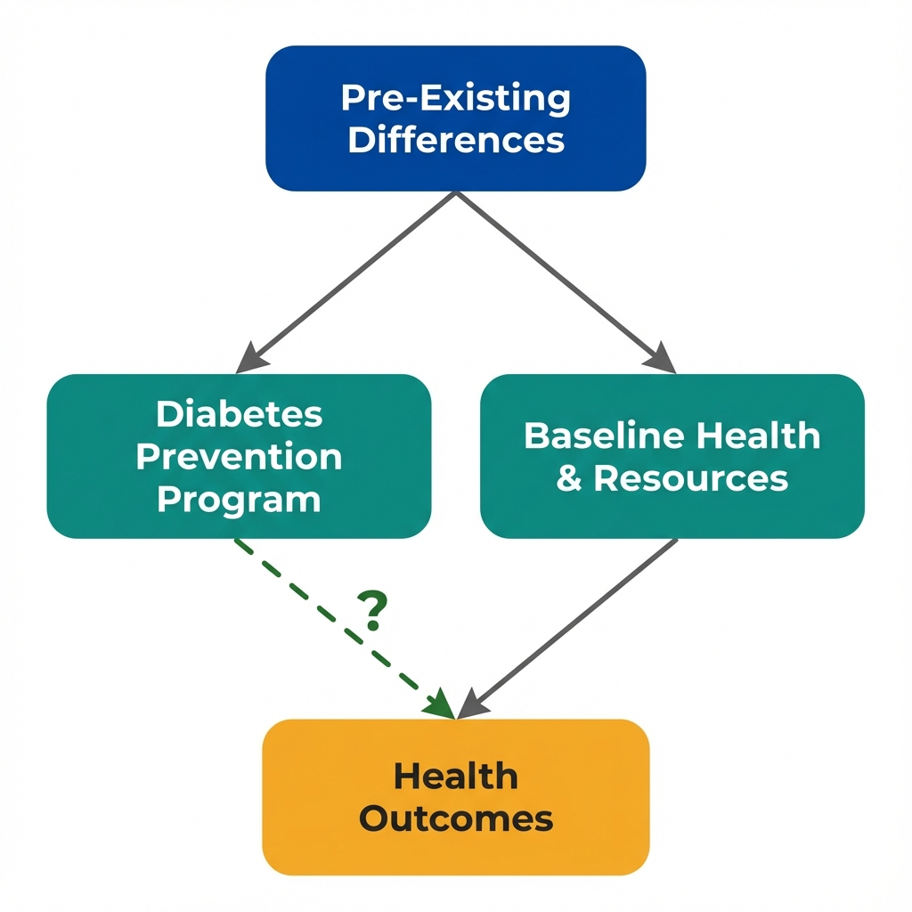

The Data
A state health department evaluates its diabetes prevention program. Some counties implemented the program; others didn't. We have outcomes for both groups. (Data are simulated for illustration.)
Next: With program and control counties, we can make a simple comparison. What does it show?
The Comparison
A traditional evaluation compares outcomes between groups. Program counties have lower hospitalization rates. Case closed?
Treatment Program Counties
Control Non-Program Counties
The Naive Conclusion
fewer hospitalizations per 10,000 in program counties
"The diabetes prevention program reduces hospitalizations by -- per 10,000."
Wait. Look at the income and access numbers again. The groups are quite different. Is this comparison fair?
The Problem
Program counties didn't adopt the intervention by chance. Wealthier counties with better healthcare infrastructure were more likely to implement the program. Those same factors also affect diabetes outcomes directly.

Arrows show potential causal relationships. The dashed arrow is what we want to estimate, but confounding makes it difficult.
What Is Selection Bias?
Selection bias occurs when the process that determines who receives treatment is related to outcomes. In this case:
- Wealthy counties with good healthcare access adopted the program
- Those same advantages reduce hospitalizations, with or without the program
- The comparison is confounded: we can't separate the program effect from pre-existing advantages
Next: To make a valid comparison, we need the groups to be "exchangeable." What does that mean?
Exchangeability
A valid control group must answer the question: "What would have happened to the treated group if they hadn't been treated?" This requires the groups to be exchangeable at baseline.
Baseline Characteristics: Are These Groups Comparable?
| Characteristic | Program Counties | Control Counties | Difference |
|---|---|---|---|
| Median household income | -- | -- | -- |
| Primary care physicians per 10,000 | -- | -- | -- |
| % with health insurance | -- | -- | -- |
| Food environment index | -- | -- | -- |
These Groups Are Not Exchangeable
Program counties are systematically advantaged on every baseline measure. If we swapped the labels, we would not expect similar outcomes. The control counties cannot tell us what would have happened to program counties without the intervention.
The Counterfactual Question
What We Want to Know
If program counties had NOT implemented the diabetes prevention program, what would their hospitalization rates be?
What Control Counties Tell Us
What happens to different counties (poorer, less access) without the program. This is not the same question.
Next: What can we actually conclude from this comparison? And what would we need for a valid causal claim?
Key Insight
These questions help identify selection problems that a simple comparison cannot solve. They won't prove causation, but they reveal where the analysis is most vulnerable.
Why did some counties get the program?
Understanding the selection mechanism is crucial. If selection is based on factors related to outcomes, the comparison is biased.
Were the groups similar before the program?
Exchangeability requires that treatment and control groups would have similar outcomes in the absence of treatment.
What else differs between the groups?
Observable differences (income, access) hint at unobservable ones (community engagement, leadership quality).
What study design would help?
Randomization ensures exchangeability. Without it, we need quasi-experimental approaches.
Concepts Demonstrated in This Lab
Key Takeaway
Having a control group is necessary but not sufficient for causal inference. The groups must be exchangeable: similar enough that the control group's outcomes represent what would have happened to the treatment group. When selection into treatment is non-random, the comparison is biased. The solution isn't more controls or fancier statistics. It's finding variation in treatment that is independent of the factors that affect outcomes. This is what economists mean by "identification."